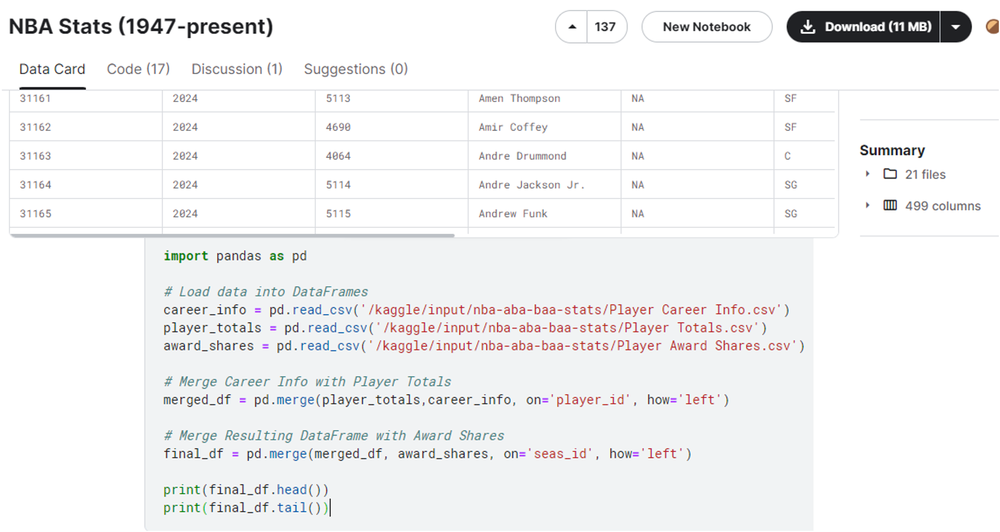
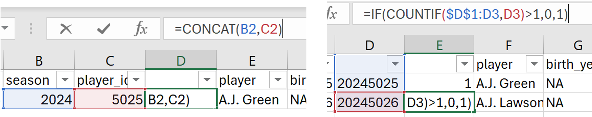
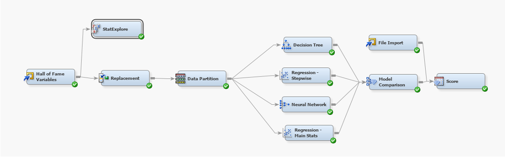
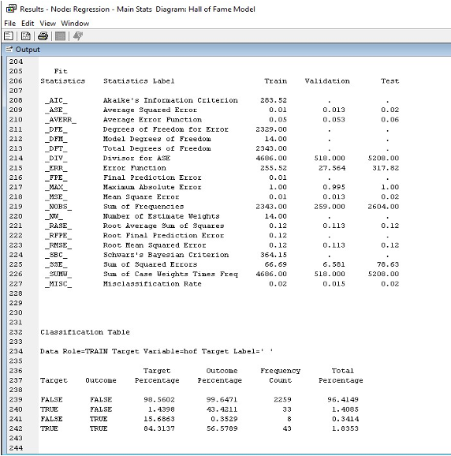
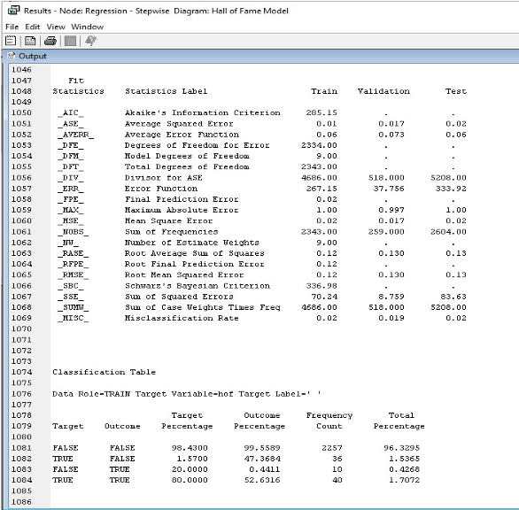
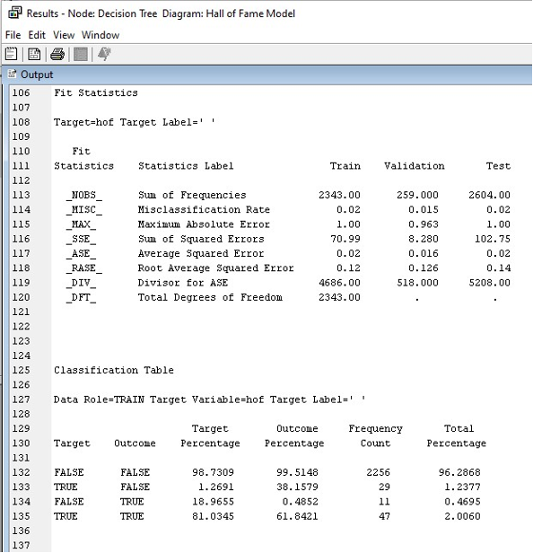
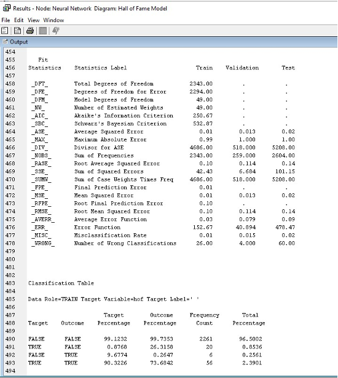
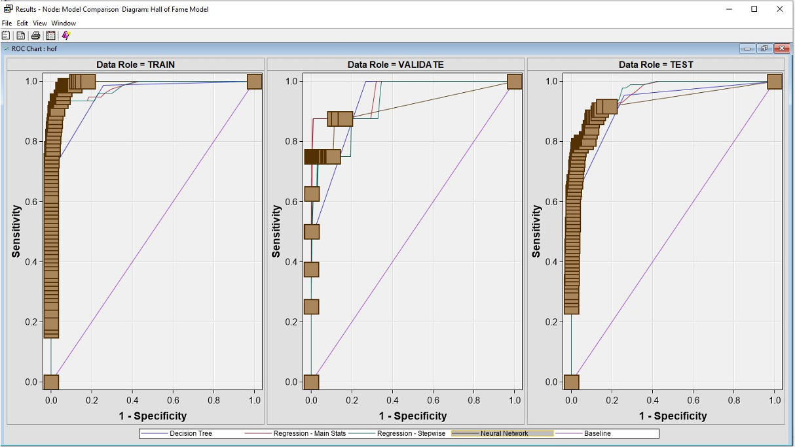
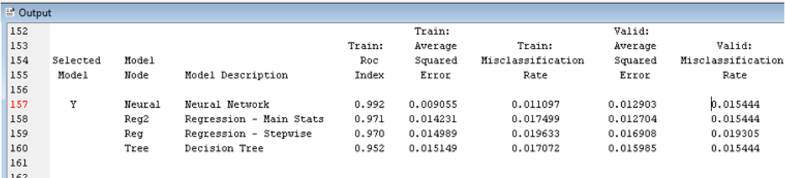
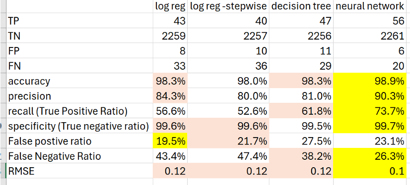

The NBA Hall of Fame honors players who have shown exceptional skill at basketball, all-time great coaches, referees, and other major contributors to the sport. The NBA Stats (1947 – Present) dataset was used to develop a model to predict Hall of Fame players in the NBA. We utilized SAS EM and modeled the data using logistic regressions, a decision tree, and a neural network. We compared all the models we developed to determine which was the best predictor. After observing the models, we identified areas of improvement that could enhance all the models.
The dataset we used in this project contains 21 files, 499 columns, and between 5200 and 32000 rows for most files. It contains all major, minor, and advanced recorded basketball stats for each player. We identified 3 tables within the dataset that contained all the information we needed: “Player Career Info”, “Player Totals”, and “Player Award Shares”. Joining the tables on “season ID” and “player ID” introduced us to new issues with the data.
The main issue presented from joining the tables was the non-uniformity of the data. We had to create and execute many Excel formulas to make the data uniform in a player totals format instead of a seasonal format.
Our project employed two logistic regressions, a decision tree, and a neural network to predict Hall of Fame candidates. We utilized SAS EM to implement the models, leveraging logistic regression for categorical outcomes, a decision tree for its intuitive step-by-step branching approach, and a neural network for its advanced pattern recognition capabilities. Following the implementation, we conducted an in-depth analysis and comparison of the models' performance, focusing on their predictive accuracy and significance of variables.
Our logistic regression using limited variables yielded a RMSE of 0.12, accuracy of 98.3%, precision of 84%, recall of 56.6%, specificity of 99.6%, and a false positive ratio of 19.5%. These results demonstrate a robust predictive model with high accuracy and precision, though the recall indicates room for improvement in identifying true positives.
The logistic regression with stepwise selection criteria achieved a RMSE of 0.12, accuracy of 98%, precision of 80%, recall of 52.6%, specificity of 99.6%, and a false positive ratio of 21.7%. This model performed similarly to the limited variables regression, highlighting the importance of variable selection in predictive accuracy and precision.
Our decision tree model produced a RMSE of 0.12, accuracy of 98.3%, precision of 81%, recall of 61.8%, specificity of 99.5%, and a false positive ratio of 27.5%. The decision tree demonstrated strong performance, particularly in recall, suggesting it is effective at identifying true positives but has a higher false positive rate.
The neural network achieved a RMSE of 0.10, accuracy of 98.9%, precision of 90.3%, recall of 73.7%, specificity of 99.7%, and a false positive ratio of 23.1%. With the highest accuracy, precision, and recall among all models, the neural network proved to be the most effective, showing exceptional pattern recognition and predictive capabilities.
The ROC curve (Receiver Operating Characteristic curve) is used to evaluate the performance of our classification models. It plots the true positive rate against the false positive rate at various threshold settings. The closer the curve is to the upper left corner, the higher the model's accuracy. In our analysis, the neural network performed the best with an AUC (Area Under the Curve) of 0.992, followed by the logistic regression models with AUCs of 0.971 and 0.970, and the decision tree with an AUC of 0.952.
 In conclusion, our neural network model excelled in predicting NBA Hall of Famers, offering confidence in its ability to foresee future inductees based on their careers. However, improvements could be made to the false negative ratios, potentially by incorporating intangible factors such as community involvement and contributions to the NBA Players Association. These aspects are vital for a comprehensive prediction. We hope this presentation has provided insightful and interesting perspectives on Hall of Fame predictions.
Dataset: NBA Stats (1947 – Present) on Kaggle